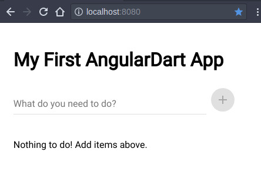

First we are going to install stagehand program using the pub package manager.
pub global active stagehandPub’s global option allows you to run Dart scripts from the command line when you are not currently inside a package. Now run pub global list to see all the install global package.
stagehand 1.1.6In this case there is only one packages install. stagehand generates the scaffolding of the project you choose for example a simple web app, an angular app, etc.
Let’s create the scaffolding for a angular app by running this command.
stagehand web-angularThis will generate the next directories and files for an angular dart app.
.
├── analysis_options.yaml
├── CHANGELOG.md
├── lib
│ ├── app_component.css
│ ├── app_component.dart
│ ├── app_component.html
│ └── src
│ └── todo_list
│ ├── todo_list_component.css
│ ├── todo_list_component.dart
│ ├── todo_list_component.html
│ └── todo_list_service.dart
├── LICENSE
├── pubspec.yaml
├── README.md
├── test
│ └── app_test.dart
└── web
├── favicon.png
├── index.html
├── main.dart
└── styles.cssNow run these commands to get all the dependecies and start a server:
pub get
pub serveGo to port http://localhost:8080 and you will see this todo app.
